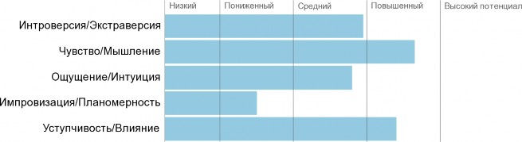

Отчёт составлен в сервисе онлайн-тестирования «Профориентация» 8 ноября 2018
Результаты тестирования
Сводный профиль

Рекомендуемые профессии

Руководитель аналитического отдела Менеджер проекта
Руководитель группы разработчиков (IT) Start-up менеджер/Руководитель новых проектов Руководитель по маркетингу Арт-директор
Руководитель отдела R&D Креативный директор
Трейдер/дилер Редактор периодических изданий
Медиа-аналитик Редактор интернет-портала
Маркетолог Руководитель отдела рекламы и PR
Специалист по исследованиям
Профессионально важные качества

Управление Принятие ключевых управленческих решений, стратегическое планирование, управление людьми и рабочими процессами.
Вы обладаете рядом профессионально важных качеств, необходимых для управленческой деятельности. Вам можно ориентироваться на работу, включающую в себя управление людьми и деловыми процессами в организациях. Также Вам может подойти работа с высокой степенью ответственности за дело, где Вы могли бы принимать значимые управленческие решения. Это то, что может заинтересовать Вас сейчас и где Вы могли бы с успехом применить свои способности: любознательность, аналитический ум, стрессоустойчивость, умение полагаться на логику. Возможно, Вам стоит задуматься над получением дополнительного образования в области управления (если у Вас его еще нет).
Проекты Проектный менеджмент, создание новых направлений бизнеса, предпринимательство.
У вас есть определенные профессионально важные качества, необходимые для проектной деятельности. Однако ряда других качеств Вам может недоставать: способностей (любознательность, аналитический ум, активность, эмоциональная устойчивость, умение полагаться на интуицию, лидерские качества) или интереса к сфере проектного менеджмента. В любом случае, Вам следует лишь частично ориентироваться на работу, включающую в себя постановку и развитие новых деловых проектов и направлений какого-либо бизнеса, творческого подразделения, открытие своего дела. Проектная работа может стать не основным, но одним из дополнительных направлений Вашего профессионального развития.
Коммуникации Общение и коммуникации, ведение продаж и переговоров, презентации и продвижение товаров и услуг.
Вы обладаете рядом профессионально важных качеств, необходимых для коммуникативной работы. Вам можно рекомендовать работу, которая будет включать в себя обеспечение внешних процессов в какой-либо организации. Это могут быть общение и контакты с клиентами, презентации, продажи и переговоры, командировки и выездные мероприятия, выставки и PR и прочее.
Это то, что может заинтересовать Вас сейчас и где Вы могли бы с успехом применить свои способности: грамотность и эрудицию, активность и общительность, эмоциональность и лидерские качества. Возможно, Вам стоит задуматься над получением дополнительного образования в области коммуникаций, переговоров, продаж и т.п. (если у Вас его еще нет).
Сервис Оказание услуг и помощь другим людям, качественное обслуживание, командная работа.
По результатам тестирования у Вас не проявились профессионально важные качества, необходимые для сервисной деятельности. Возможно, Вам просто не интересно работать в сфере оказания услуг. В любом случае, не рекомендуем Вам ориентироваться на работу, включающую в себя командную деятельность, поддержку и информирование клиентов, аккаунт-менеджмент, различные сервисные профессии (клиентские службы, медицина и социальная работа, профессиональные услуги различной профессиональной направленности).
Скорее всего, Вам будут интересны более регламентированные виды деятельности, где Вы могли бы заниматься контролирующей работой административного характера. Если у Вас при этом выражены профессионально важные качества в области «Контроля», Вам рекомендуется выбирать карьеру, связанную не с оказанием услуг, а именно с профессиональным развитием в области контроля и администрирования.
Инновации Творческая деятельность, разработка новых услуг, продуктов и технологий, креатив.
Вы обладаете рядом профессионально важных качеств, необходимых для инновационной деятельности. Вам можно рекомендовать работу, которая будет включать в себя творческую деятельность, разработку или адаптацию новых продуктов, услуг и технологий. Это может быть работа в отделах разработки, дизайна, креатива и т.д. Возможно, Вам будет интересно заниматься самостоятельной творческой работой, например, на дому, или оказывать творческие услуги другим людям и компаниям удаленно. В любом случае главное здесь — свобода творчества и возможность самостоятельно определять, чем и как заниматься. Это то, что может заинтересовать Вас сейчас и где Вы могли бы с успехом применить свои способности: любознательность и инновационное мышление, интуитивность и гибкость. Возможно, Вам стоит задуматься над получением дополнительного образования в интересующей Вас творческой области (если у Вас его еще нет).
Технологии Обеспечение качества работы, профессиональная компетентность, реализация технологий на практике, глубокая специализация.
У вас есть определенные профессионально важные качества, необходимые для технологической и специальной деятельности. Однако ряда других качеств Вам может недоставать: способностей (аналитический ум, организованность) или интереса к работе в сфере технологий. В любом случае, Вам следует лишь частично ориентироваться на работу, включающую в себя деятельность по созданию различных товаров или услуг, выпуску готового продукта, глубокую специализацию в какой-либо предметной области. Технологическая работа может стать не основным, но одним из дополнительных направлений Вашего профессионального развития.
Аналитика Анализ, обработка и осмысление информации, прогнозирование и проработка решений на будущее.
Вы обладаете рядом профессионально важных качеств, необходимых для аналитической деятельности. Вам можно рекомендовать работу, которая будет включать в себя анализ и осмысление различной информации, выявление различных механизмов и причин в функционировании чего-либо в различных сферах (напр., технических, ИТ, экономических, политических, социальных и т.д.), прогнозирование рисков и перспектив. Это то, что может заинтересовать Вас сейчас и где Вы могли бы с успехом применить свои способности: внимательность, аналитический ум, любознательность, склонность к работе с информацией, выдержанность, организованность. Возможно, Вам стоит задуматься над получением дополнительного образования в интересующей Вас профессиональной области аналитики (если у Вас его еще нет).
Функционал Обеспечение рабочих процессов, четко очерченный круг ответственности, исполнительская работа.
По результатам тестирования у Вас не проявились профессионально важные качества, необходимые для сферы функциональной деятельности. Возможно, Вам просто не интересно работать в сфере обеспечения процессов. В любом случае, не рекомендуем Вам ориентироваться на работу, включающую в себя чисто исполнительский труд (напр., документооборот, работа с кадрами, финансами, информацией и др. внутриорганизационной средой). Скорее всего, Вам будет интересна более динамичная и активная деятельность, где необходимо во многом полагаться исключительно на себя. Если у Вас при этом выражены профессионально важные качества в области «проектов», Вам рекомендуется выбирать работу, связанную не с исполнительской, а именно с проектной и управленческой деятельностью. Если Вы молодой специалист или только начинаете осваивать какую-то сферу, учтите, что в любой организации Вам придется заниматься исполнительской работой, хотя бы на первых порах. Если Вы все равно хотите решать все самостоятельно, советуем задуматься об открытии своего дело или внештатной работе.
Контроль Контроль и аудит работы других людей, обеспечение качественных и количественных показателей в деятельности.
У вас есть определенные профессионально важные качества, необходимые для деятельности, связанной с контролем. Однако ряда других качеств Вам может недоставать: способностей (внимательность, склонность к работе с документами, практичность, организованность и дисциплинированность), или интереса к работе в сфере контроля и аудита какой-либо деятельности. В любом случае, Вам следует лишь частично ориентироваться на работу, включающую в себя проверку работы других людей в различных областях (исполнительской дисциплины, качества выпускаемого товара, финансовой отчетности, расхода рабочего времени, безопасности и т.д.). Контролирующая работа может стать не основным, но одним из дополнительных направлений Вашего профессионального развития.
Администрирование Планирование и администрирование рабочих процессов, обеспечение порядка и стабильности деловых процессов, административный менеджмент.
У вас есть определенные профессионально важные качества, необходимые для административной деятельности. Однако ряда других качеств Вам может недоставать: способностей (внимательность и логика, организованность, лидерские качества), или интереса к работе в сфере администрирования деятельности. В любом случае, Вам следует лишь частично ориентироваться на работу, включающую в себя выполнение функций поддержки различных систем (финансовых, юридических, кадровых, производственных и т.п.) внутри организации; планирование и контроль над текущей деятельностью, а также обеспечение порядка и стабильности в различных организационных процессах. Административная работа может стать не основным, но одним из дополнительных направлений Вашего профессионального развития.
Профинтересы
Менеджер Судя по Вашим ответам, в настоящее время Вы очень заинтересованы в том, чтобы отвечать не только за свою работу, но и за результаты других людей, управлять ими. Вам важно не просто быть частью системы, заведенного порядка, но и влиять на существующие деловые процессы, участвовать в принятии важных управленческих решений. Учитывая Ваш ярко выраженный интерес к управлению, Вам имеет смысл развивать карьеру в этой области.
Предприниматель На данный момент Вы нейтрально относитесь к области «предпринимательской» деятельности. Сейчас Вам не важно, будете ли Вы развивать собственное дело, самостоятельно разрабатывать и продвигать какой-либо проект.
Коммуникатор Похоже, сейчас Вам не очень интересно взаимодействовать с большим количеством людей, развивать и поддерживать широкую сеть контактов. Скорее всего, Вам не стоит сейчас заниматься работой, связанной со сферой услуг, включающей в себя большое количество контактов с клиентами. Видимо, Вам больше нравится работать самостоятельно или в привычном кругу коллег.
Особенно это актуально, если у Вас высокие показатели по шкале АНАЛИТИК.
Инноватор Похоже, Вам не особенно важно, чтобы Ваша работа была творческой.
Возможно, Вы не против того, чтобы в Вашей работе присутствовали элементы креатива, но это не то, к чему Вы стремитесь.
Специалист Вы описали себя как человека, которому не интересно развивать экспертизу в одной профессиональной области. Видимо, Вам не стоит ориентироваться на работу, которая подразумевает работу в одной УЗКОЙ сфере деятельности. Похоже, Вам скорее ближе деятельность, предполагающая овладение знаниями и навыками из совершено разных областей, нежели узкая специализация. Если у Вас высокие значения по шкале МЕНЕДЖЕР, Вам с большой долей вероятности стоит строить управленческую карьеру.
Функционалист Отвечая на вопросы теста, Вы указали, что работа, связанная с обеспечением внутренних процессов компании, Вам скорее не интересна. Видимо, Вам не стоит заниматься работой, которая предполагает только обеспечение каких-либо процессов внутри организации (например, документооборот, работа с кадрами, финансами, информацией или другая внутрикорпоративная среда) в устоявшихся стабильных условиях. Скорее всего, вам ближе более динамичная и активная деятельность, где необходимо во многом полагаться на себя. Если у Вас при этом высокие значения по шкале ПРЕДПРИНИМАТЕЛЬ, вы явно хотите заниматься только той работой, которая предполагает самостоятельное и независимое решение рабочих вопросов и распределение своих ресурсов. Если Вы молодой специалист и находитесь пока в самом начале своего карьерного пути, пожалуйста, учтите, что полностью избежать исполнительской рутинной работы, по крайней мере, на первых порах, не удастся. Если для Вас крайне важно решать все самостоятельно, имеет смысл открыть свое дело или предлагать свои услуги в качестве независимого (внештатного) работника.
Аналитик Вам, похоже, довольно интересно работать с информацией, анализировать различные источники данных. Вероятно, Вам имеет смысл задуматься о развитии своей карьеры как аналитика: заниматься работой, которая будет непосредственно связана с анализом и осмыслением различной информации, выявлением системных закономерностей и причин в различных сферах (напр., технических, IT, экономических, политических, социальных и т.д.), оценкой рисков, перспектив и так далее. Обратите внимание, что если у Вас при этом низкие значения по шкале КОММУНИКАТОР, Вы вряд ли будете получать удовольствие от работы с людьми, от большого количества контактов. В этом случае Вы, скорее всего, человек «уединенной» работы.
Администратор Похоже, на данный момент Вам не особенно важно, будет ли Ваша работа включать в себя административный функционал или нет. Ваша работа,
по-видимому, может содержать в себе некоторые функции поддержки различных систем (финансовых, юридических, кадровых, производственных и т.п.) внутри организации; планирования и контроля над текущей деятельностью; обеспечения порядка и стабильности в различных организационных процессах. Но нельзя сказать, что это должно быть основным в Вашей работе.
Структура интеллекта

Вычисления Вы показали средний результат по заданиям на вычисления, справившись с соответствующими заданиями. Вам могут подойти профессии, в которых математические способности задействуются в некоторой степени (химик, экономист, эколог, технолог промышленности, социолог и др.). Однако если Вы выбираете профессию, требующую серьезной математической подготовки (программист, финансовый аналитик и др.), то Вам необходимо развивать свои способности к вычислениям и работе с числовой информацией.
Лексика Ваш результат по лексическому тесту оказался выше среднего. Вы наверняка хорошо умеете излагать свои мысли в устной и письменной форме, поэтому Вам вполне подойдут гуманитарные и социальные профессии (такие, где устная и письменная речь активно используется). Однако это не означает, что сфера точных наук для Вас закрыта. Помните, что лексический уровень - показатель общей культуры человека, и, развивая свой словарный запас и свою речь, Вы в любом случае будете повышать свою ценность на рынке труда.
Эрудиция Ваш результат по тесту на эрудицию оказался выше среднего. Вы очень неплохо ориентируетесь в разнообразных сферах окружающей жизни: науке и искусстве, мировой экономике и истории. Данный показатель отражает широту кругозора, любознательность, умение работать с большим количеством информации. Люди с такой эрудицией часто находят себя на должностях, предполагающих активный поиск и анализ информации, а также общение с разнообразными людьми.
Отметим, что эрудиция - важный показатель общей культуры человека, значительно повышающий его конкурентоспособность на рынке труда.
Зрительная логика Вы показали высокий результат по тесту на зрительную логику. Вы с легкостью можете решать задачи на пространственное мышление (геометрические, конструкторские, дизайнерские), анализировать рисунки, чертежи, схемы. Ваши способности необходимы представителям творческих профессий: фотографу, художнику-модельеру, режиссеру, флористу, архитектору и др (в сочетании с художественным талантом, определить который может только эксперт в данной области). Если у Вас высокий результат теста на вычисления, то Ваши способности могут найти свое применение в строительстве, инженерных профессиях, химии и математике. Отметим, что зрительная логика определяет общий интеллектуальный потенциал человека.
Абстрактная логика Вы показали высокий результат по тесту на абстрактную логику. Абстрактная логика отражает способность рассуждать, строить высказывание (его логику), мыслить на понятийном, абстрактном, а не конкретном, уровне. Вы отлично справитесь с работой в тех областях, где придется анализировать большое количество информации, находить закономерности и противоречия, стратегически мыслить. Отметим, что абстрактная логика присуща- ученым, аналитикам, исследователям, решающим нестандартные задачи, находя ответ путем логических рассуждений. В сочетании с хорошей лексикой и эрудицией абстрактная логика дает шанс добиться успеха гуманитарной сфере: юриспруденции, журналистике, изучении иностранных языков, лингвистике, психологии, педагогике и др.. Если вместе с вышеперечисленным Вы показали неплохие результаты по математике и зрительной логике, то Вам стоит также обратить внимание на медицину, экономику, физику и математику.
Внимание Вы показали уровень внимания выше среднего. При желании, Вы можете сконцентрироваться на выполнении задания даже в стрессовых условиях (например, ситуация экзамена или тестирования). Поэтому у Вас хорошо будет получаться работа кропотливая, монотонная и требующая высокой точности и аккуратности: работа с цифрами, чертежами (проектировщик, операционист, программист, экономист), с документами (юрист, бухгалтер, менеджер). Также работа в экстремальных условиях (водитель, пилот, каскадер, пожарный, спасатель). Если Вы выбираете профессии, предъявляющие повышенные требования к вниманию, продолжайте развивать свою внимательность, способности к концентрации и распределению внимания, ведь Вам ещё есть, куда расти.
Личность


Интроверсия/Экстраверсия Сбалансированная ориентация, как на «внешний», так и на «внутренний» мир. При прочих равных условиях такая сбалансированность – ваше преимущество, залог определенной гармонии. Вы – человек как действия, так и рассуждения. Для Вас одинаково важно иметь возможность побыть наедине с собой, вести размеренный уклад жизни, и, одновременно с этим, получать новые впечатления и вести активный образ жизни. Поддержание адекватного баланса интроверсии и экстраверсии позволит Вам реализоваться как во внешнем, так и во внутреннем плане. Как правило, Вы не испытываете особых трудностей в общении, можете найти контакт с людьми. Потенциально Вы способны быть и приятным и внимательным «слушателем», и, одновременно с этим, сами можете поговорить. Предпочитаете иметь определенный круг друзей, но и не против новых знакомств и отношений. Своими глубокими мыслями и переживаниями делитесь с окружающими не часто, но стараетесь долго не копить их «внутри». Ваша работа, видимо, должна органично сочетать в себе динамику и статику: общение, смена деятельности, командировки - этого не должно быть ни много, ни мало. Решения предпочитаете принимать как самостоятельно, обдумав и взвесив «за» и
«против», так и в обсуждении с другими людьми. Можете реализоваться как в групповых, так и индивидуальных формах деятельности. Активная деятельность может требовать от Вас обязательных периодов спокойствия и отдыха. В деле Вы может проявлять как скорость и быстроту, так и усидчивость и сосредоточенность.
Чувство/Мышление Для Вас характерна развитая "мыслительная" сфера личности, показателями которой являются аналитичность, стремление к объективности, ориентация на собственное мнение, некоторый индивидуализм, твердость, жесткость. Одни из основных сфер успешной деятельности для Вас - работа в организациях, где управление опосредованно документами (приказами, инструкциями, программами). Также сферы аналитики, механики, производства, бизнеса и т.п. Чем вы эффективно пользуетесь: способность анализировать и организовывать, трезво оценивать ситуацию, способность мыслить последовательно и четко. Что следует развивать: умение убеждать, располагать к себе людей, поддержка и экспрессия.
Ощущение/Интуиция У Вас одинаково развиты как интуитивная сфера, так и ощущающая сенсорная сферы личности. Вы равноценно относитесь как ко всему новому, неизвестному, так и к тому, что есть у Вас сейчас. Вы человек, который может быть как оригинальным, с хорошо развитой фантазией и воображением, так и конкретным и практичным, умеющим делать то, что необходимо непосредственно сейчас.
Сфера деятельности: сочетание поиска новых идей и возможностей, исследования с реализацией и применением чего-либо на практике. Ваши сильные стороны: умение уделять внимание, как насущным проблемам, так и отдаленной перспективе развития. То, чему следует уделить внимание: не всегда способны выбрать между новыми перспективами в будущем либо выгодами, которые Вы можете получить прямо сейчас.
Импровизация/Планомерность Для Вас характерен "умеренно-импровизационный" стиль поведения. Он
отражает ориентацию на процесс, гибкость, адаптивность, открытость новому, определенную неустойчивость, неопределенность. Для Вас приемлемы следующие условия деятельности: ориентация на процесс выполнения дела, гибкий график либо не четко структурированная деятельность, позволяющая менять темпы и задачи работы; наличие открытости и незавершенности в постановке рабочих целей и задач, многовариантность способов деятельности. Тогда Вы сможете успешно справляться с поставленными целями, не "зажимая себя в тиски" четкого плана и графика.
Уступчивость/Влияние Вы показали, что являетесь доминантным человеком: стремитесь взять вверх над окружающими, можете легко отстаивать свои интересы и добиваться реализации своих желаний. Данное качество будет весьма полезным там, где порой необходимо проявить жесткость и волю - в руководстве другими людьми.
Рекомендации по развитию

Для успешного освоения профессий, к которым Вы имеете склонности, а также в целях личного саморазвития, рекомендуется посетить следующие тренинги и программы для развития:
Стрессменеджмент Вам рекомендуются тренинги по дальнейшему развитию навыков эффективного поведения в стрессовых ситуациях. Данные программы рекомендуются людям уверенным, стрессоустойчивым, тем, кто постоянно работает в ситуациях повышенных рисков (представители силовых профессий, менеджеры и т.д.).
Самоорганизация Вам могут быть полезны тренинги по развитию навыков самоорганизации (умению планировать свое время, выделять приоритеты, ставить цели и достигать их). Данные программы рекомендуются, импульсивным, недисциплинированным людям для повышения общего уровня организованности и умения эффективно использовать свое время.
Уверенность в общении Вам могут быть полезны тренинги по развитию уверенности в общении, готовности взаимодействовать с людьми, не испытывая при этом дискомфорта и не прикладывая чрезмерных усилий (преодоление закрытости, недоверия, неуверенности или скованности по отношению к другим людям, развитие раскрепощенности и открытости в отношениях).
Управление другими Вам рекомендуются тренинги по развитию навыков эффективного управления другими людьми (лидерство, основы управления, принятие решений, влияние на других и т.д.). Данные программы рекомендуются тем, кто заинтересован в управлении людьми и имеет необходимые для этого качества (активность, уверенность в себе, мотивация достижения).
Креативность Вам рекомендуются тренинги по развития навыков креативного мышления и творческих способностей (мозговой штурм, ментальные карты, мифологический анализ, «триз» и т.д.). Данные программы рекомендуются тем, кто заинтересован в творческой работе и имеет необходимые для этого качества (мотивацию к инновациям, умение нестандартно мыслить, тягу к новому, гибкость поведения).